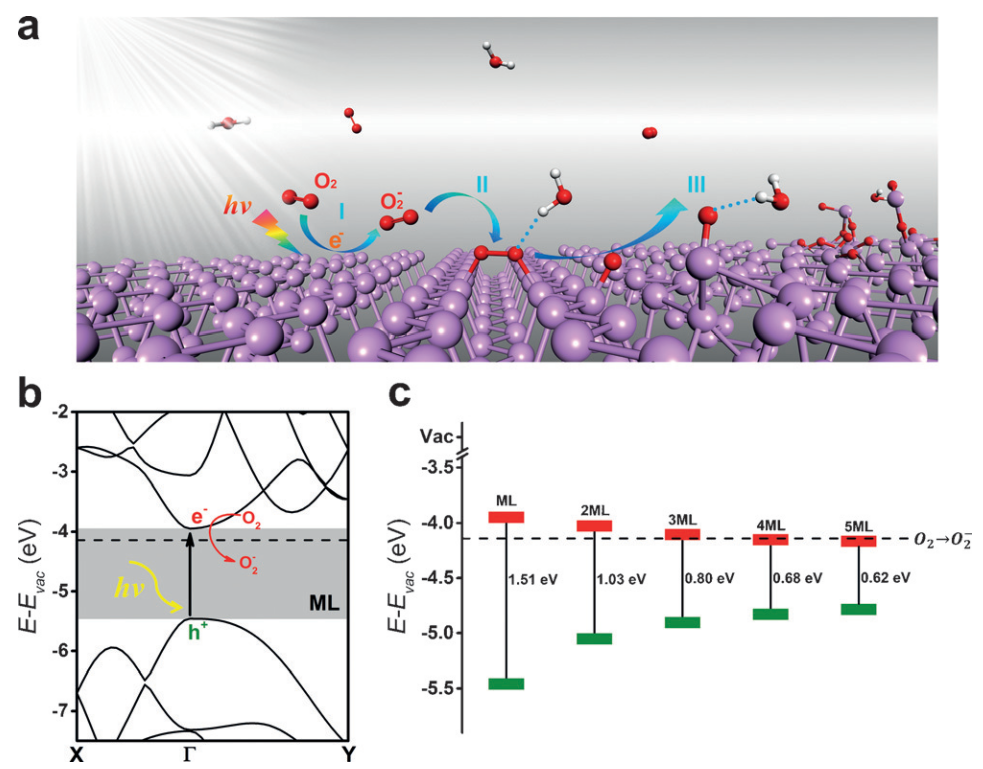
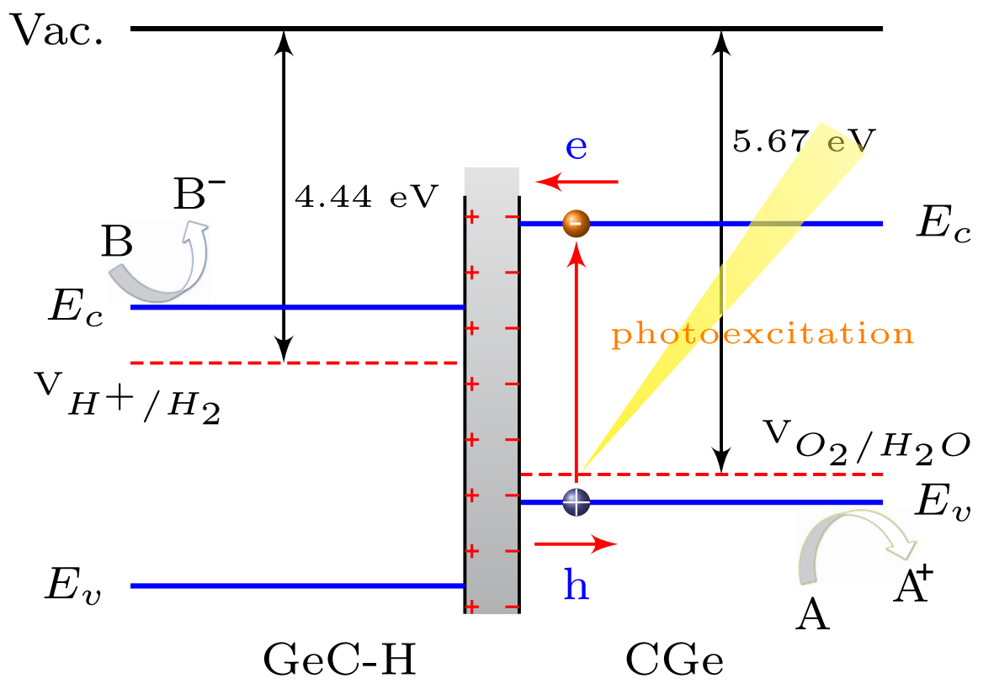
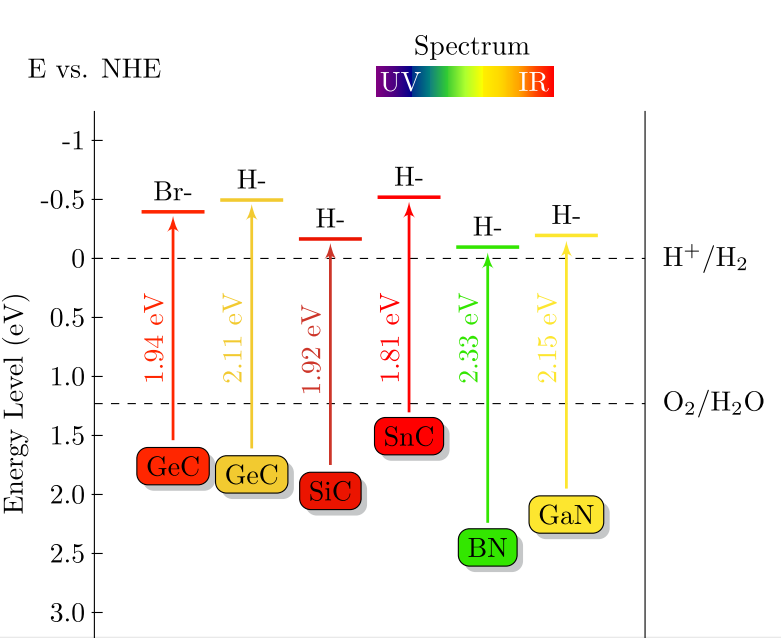
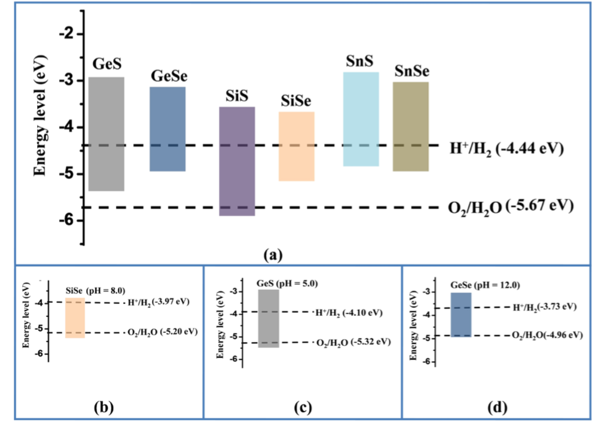
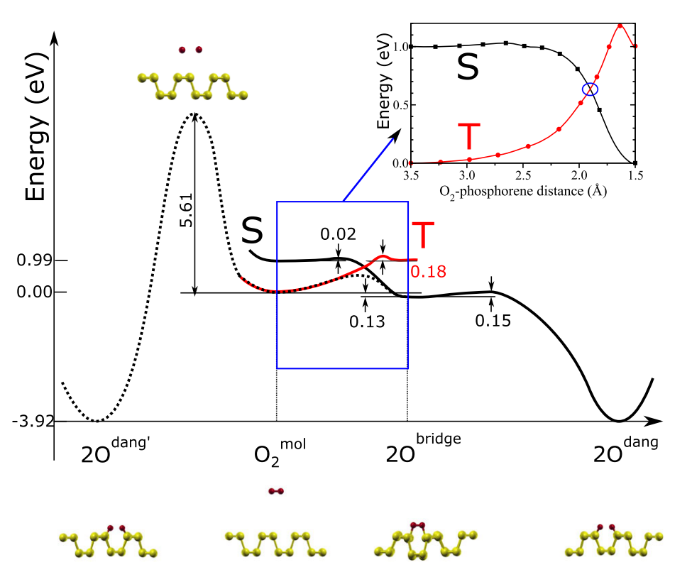
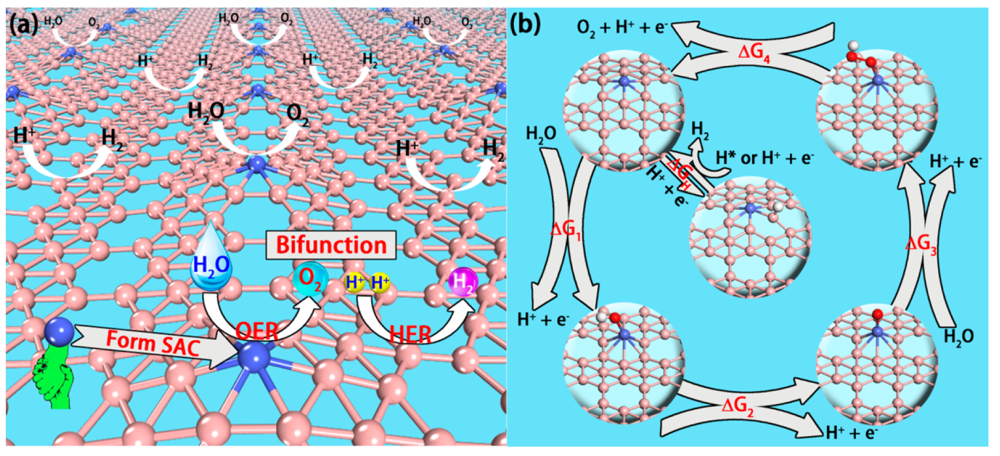
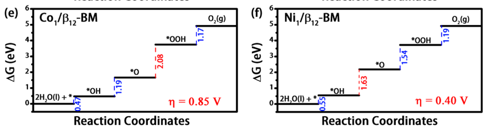
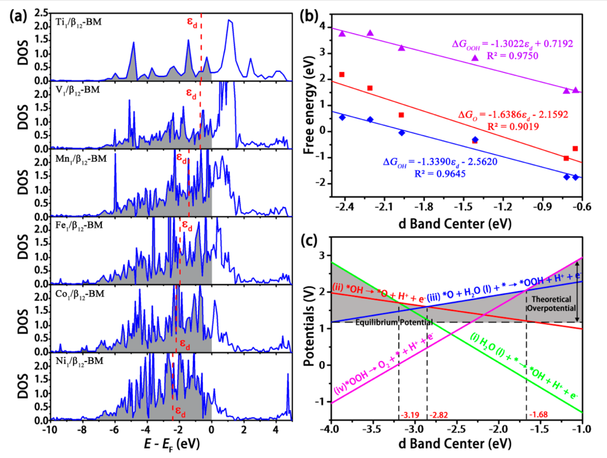
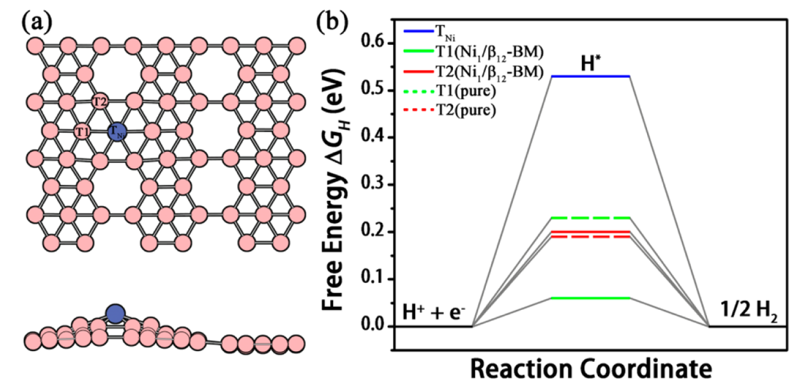
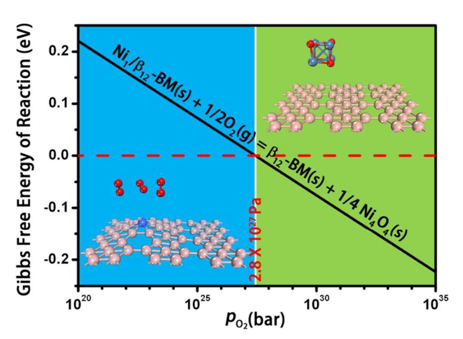

1 Light-Induced Ambient Degradation of Few-Layer Black Phosphorus: Mechanism and Protection[1]
Visual light(400nm-760nm) by E=h\nu=h*c/\lambda, E_{visual}=1.63 \sim 3.1 eV

Fig. 1: The light-induced ambient degradation process of phosphorene. Step I: O2- is generated through a charge transfer reaction under ambient light ( O_2+h\nu\rightarrowO_2^-+h^+ ; P and h+ stands for phosphorene and a hole, respectively); step II: O2- dissociates at the surface and forms two P-O bonds with the phosphorene(O_2^-+P+h^+\rightarrowP_xO_y); step III: through the hydrogen-bond interaction, water molecules draw the bonded O and remove P from the surface and break the top layer of phosphorene. b) HSE band structure for monolayer BP. c) The VBM and CBM of few-layer BP with respect to vacuum energy. The dashed line identifies the redox potential of O2/O2-.
Single-Point Calculation, to get the work function: W_F=E_{vac}-E_F
Band Structure Calculation, to get Valance Band Maximum (VBM) and Conduntion Band minimum (CBM) relative to E_F and E_{vac}
The redox potential is a measure (in volts) of the affinity of a substance for electrons — its electronegativity — compared with hydrogen (which is set at 0). Substances more strongly electronegative than (i.e., capable of oxidizing) hydrogen have positive redox potentials. Substances less electronegative than (i.e., capable of reducing) hydrogen have negative redox potentials. The standard reduction potential is defined relative to a standard hydrogen electrode (SHE) reference electrode, which is arbitrarily given a potential of 0.00 volts.
E_{Adsorption}=-[E_{BP+Adsorbate}-E_{BP}-E_{Adsorbate}], where Adsorbate is O2 or O2-,用于比较二者吸附的难易程度.
2 Design of Advanced Photocatalysis System by Adatom Decoration in 2D Nanosheets of Group-{IV} and {III}{}V Binary Compounds[2]
  Fig. 2: The Band alignment at GeC/GeC-H interface relative to the vacuum energy. Calculated edge positions of VBM and CBM for surface modified 2D materials relative to the vacuum energy. (Bilayer+Decoration => heterointerface)
As illustrated in Fig. 5, the built-in-field can drive the photo-generated electrons and holes move in opposite direction. The characteristics of built-in-field can help to introduce spatial separation of the electrons and holes on different layers. Thus, the formation of type-II GeC/GeC-H heterointerface is an effective approach to enhance charge-hole separation and reduce their recombination, which is useful for photronic devices or photocatalytic technology.
As shown in Fig. 5, accurate energy locations of VBM and CBM with respect to the redox potentials of water splitting are determined. On the GeC surface, the oxidation potential (5.67 eV) of V_{O_2/H_2O} is higher than VBM, suggesting photogenerated holes can be readily transferred from valence band to H2O, oxidizing it to O2 through the reaction: 2H_2O+4h\rightarrow O_2+4H^+ Meanwhile the CBM energy of bottom GeC-H layer lies above the reduction potential (4.44 eV) of H+/H2O to further produce H2: 2H^++2e^-\rightarrow H_2 Therefore, hydrogenated GeC bilayer acts as a promising visible-light-driven photocatalyst for water splitting.
The direct-band-gap hydrogenated 2D bilayers are expected to have high solar energy conversion efficiency compared to those indirect-band-gap monolayers. In Fig. 7, the band gap energy and the corresponding CBM and VBM edge positions versus NHE are plotted. It can be clear seen that for all cases, the reduction level is below the CBM, while the oxidation level is above the VBM. This reveals the oxidation and reduction processes are energetically favored with a relatively strong driving force, suggesting that the hydrogenated 2D bilayers are good candidates as photocatalysts for water splitting.
3 To shift Redox Potential by pH value
Fig. 4: redox_shift
Shift Formula as follows[3]: E^{ox}_{O_2/H_2O}=-5.67+0.059\times pHE^{red}_{H^+/H_2O}=-4.44+0.059\times pH From Ref.[4]\mu_e(eV)=-4.44+(-1)(1.29)+\frac{0.592}{4}[4pH-\log_{10}(p_{O_2})]
4 Oxygen Defects in Phosphorene[5]
In a normal working environment, oxygen is present in its molecular form with its triplet ground state (^3\Sigma_g^-) , in which the doubly degenerate \pi_{2p}^* orbitals are each only half filled by two electrons with parallel spin.
Consistent with our findings,an alternative indirect pathway is likely to be the main oxidation channel. As the oxygenmolecule gets closer to the surface, the degeneracy of its \pi_{2p}^* orbitals is lifted due to the hybridization with the phosphorene lone pairs, and the singlet state becomes more stable than the triplet. Therefore, there must be at least one point in configuration space where the triplet and singlet potential energy surfaces (PESs) cross, and triplet-to-singlet conversion likely takes place nonradiatively through intersystem crossing (ISC). Eventually, O2 is chemisorbed, forming a diagonal molecular bridge, with an energy gain of 0.13 eV with respect to isolated (triplet) oxygen and pristine phosphorene.
As is clear from the PESs in Fig. 5, in the adiabatic approximation,reaching the oxygen molecular bridge configuration requires an activation energy that depends on the crossing point between triplet and singlet PESs. A spin-unrestricted variable-magnetization calculation gives a barrier of 0.54 eV. Once the oxygen bridge has been formed, however, only 0.15 eV is needed for the spin-allowed phonon-mediated dissociation of the O2 bridge, and subsequent formation of two dangling O, with an energy gain of ~3.9 eV.
The bottleneck of phosphorene oxidation is then the initial chemisorption, where the system needs both to overcome an energy barrier and undergo an ISC, an inherently slow process . Landau-Zener theory [34,36,37] theory provides an estimate of the probability Pts for the (single passage) triplet-to-singlet conversion: P_{ts}=2[1-exp(-V^2/h\nu|F_t-F_s|)] where V is the spin-orbit matrix element between the triplet and singlet states of free O2, \nu is the velocity of an incident O2 molecule, F_s and F_t are the slopes of the singlet and triplet PES at the crossing point, and h is the Planck’s constant. By using V =122 cm−1[34,37,38], and estimating \nu from the O2 center-of-mass thermal energy at 300 K [35,37], we obtain Pts=0.12. Thus, the triplet-to-singlet conversion limits this oxidation channel. Nonetheless, due to the small energy barrier and the high exothermicity of the reaction, dangling oxygen defects will be present on the phosphorene surface after exposure to oxygen (or air). Using an attempt frequency \nu= 10^13 s-1, we estimate a rate of the order of 103s−1 at room temperature. In addition, singlet oxygen is expected to readily oxidize phosphorene because only two low barriers (0.02 and 0.15 eV) separate the physisorbed oxygen from the lowest energy chemisorbed configuration.
However, the formation of surface dangling oxygen defects requires an activationenergy of at least ~0.54 eV (for ISC) leading to the structure shown in Fig. 1(a). This energy has to be provided either thermally or possibly by light-induced excitation of the O2p electrons. The penetration of O into the lattice from the dangling configuration requires an activation energy of 0.69 eV(for transformation from dangling to interstitial oxygen), and probably occurs in a subsequent stage. Estimating the transition rate R=\nu exp(-E_a/k_BT) using the typical vibrational attempt frequency \nu=10^13s-1, the transition rate at room temperature is already of the order of 10 s−1. Thus same interstitial oxygen may be formed at room temperature, albeit at a concentration orders of magnitude lower than dangling oxygen.

Fig. 5: Schematic configuration-coordinate diagram for possible mechanisms for phosphorene oxidation. The solid (dotted) lines indicate the PESs calculated with fixed (variable) total magnetization. Singlet (black) and triplet (red) PESs as a function of the O2- phosphorene distance are shown in the inset.(Left: Direct; Right: Indirect mechanism)
5 Nanosheet Supported Single-Metal Atom Bifunctional Catalyst for Overall Water Splitting[6]
Supported single-atom bifunctional catalysts are therefore of great economic interest and scienti fi c importance….This nanosheet (Ni1/β12-BM) supported SAC exhibits remarkable electrocatalytic performance with the computed overpotential for oxygen/hydrogen evolution reaction being just 0.40/0.06 V. The ab initio molecular dynamics simulation shows that the SAC can survive up to 800 K elevated temperature, while enacting a high energy barrier of 1.68 eV to prevent isolated Ni atoms from clustering. A viable experimental route for the synthesis of Ni1/β12-BM SAC is demonstrated from computer simulation.

Fig. 6: (a) Schematic of the single-atom, bifunctional catalyst for overall water splitting. The hexagonal holes of BMs are electron-deficient and are used as supports to anchor metal atoms. If a SAC can present high activity for OER, such a SAC is a “single atom, bifunctional” catalyst for overall water splitting as the surface B atoms are highly active sites for HER. (b) Elementary reactions of OER and HER and the structures of the adsorbed states for each species, including *H, *OH, *O, and *OOH.
The whole OER entails four elementary steps: (i) a H2O molecule dissociates into an OH group, which is adsorbed on the catalyst surface (*OH); (ii) the *OH further dissociates into O group (*O); (iii) the *O reacts with another H2O molecule and produces an OOH group (*OOH); (iv) the final product, O2 , forms and is then released. In every elementary step, the release of an H+ cation and an electron always occurs (Figure 1b).
Miniaturization of the metal catalysts can be a cost-effective way to boost their catalytic performance by enhancing the surface area/volume ratio, strengthening the selectivity toward a special product, and improving their intrinsic catalytic activity.intrinsic catalytic activity. [1−8] Nanosheet supported SACs are the ultimate low-end limit for metal particles. Over the past few years, SACs have attracted enormous attention owning to their distinct advantages in full use of all metal atoms, their homogeneous active sites with distinct selectivity, and their much improved catalytic activity over conventional metal nanoparticles.[9−12]
However, the reduced metal-particle size can also result in increased surface free energy, thereby making the SACs more prone to aggregation into metal clusters.[10] A strong support that can anchor the individual metal atom firmly to prevent metal atoms from aggregation is crucial to maintain high performance of SACs. To date, various metal oxides (such as FeOx), crystalline metal surfaces, graphene sheets, and metal−organic frameworks, among others, have been investigated as the support for SACs[9,12-16].
The HER and OER performances were evaluated by computing the reaction free energy ({\Delta}G)based on the spin-polarized calculation for each step via the equation {\Delta}G={\Delta}E+{\Delta}E_{ZPE}-T{\Delta}S where the {\Delta}E is the adsorption energy of a given group and {\Delta}E_{ZPE} and {\Delta}S are the differences in the zero-point energy and the difference in entropy, respectively, between the adsorbed state and the corresponding free-standing state.

Fig. 7: Free energy diagram for (e) Co1/β12-BM, and (f) Ni1/β12-BM for OER at zero potential (U = 0), where the elementary reaction with {\Delta}G in red represents the potential-determining step.

Fig. 8: (a) Calculated PDOS of the d band of the TM atoms in TM1/β12-BM, TM = Ti, V, Mn, Fe, Co, and Ni. The d band center is marked by the red dashed line, and the Fermi level is set as zero. (b) Free energy of each species (OH, O, and OOH) and (c) the potential of each reaction as a function of the d band center, where the shadow area is the theoretical overpotential under different energy levels of d band center.
Fig. 9: bifunction_4
Fig. 9: (a) T1 and T2 sites on the top of B atoms and TNi site on the top of Ni atom in Ni1/β12-BM and (b) corresponding {\Delta}G_H as compared with that of T1 and T2 sites on pure β12-BM.
Fig. 10: bifunction_5
Fig. 10: Gibbs free energy of reaction of Ni4O4 cluster formation on Ni1/\beta12-BM (Ni_1/\beta_{12}-BM(s)+\frac{1}{2}O_2(g)=\beta_{12}-BM(s)+\frac{1}{4}Ni_4O_4(s)) versus the pressure of the O2 under 298.15 K. Blue and green regions represent the formation of Ni SAC and Ni oxide, respectively. The critical pressure is ~2.8\times10^{27} Pa, which is ultra-high. Therefore, Ni atoms on \beta12-BM can hardly be oxide into Ni oxide.
[1]
Zhou, Q.; Chen, Q.; Tong, Y.; Wang, J. Light-Induced Ambient Degradation of Few-Layer Black Phosphorus: Mechanism and Protection. Angew. Chem. Int. Ed.2016, 55, 11437–11441.
[2]
Jin, H.; Dai, Y.; Huang, B.-B. Design of Advanced Photocatalysis System by Adatom Decoration in 2d Nanosheets of Group-IV and IIIv Binary Compounds. Sci. Rep.2016, 6.
[3]
Chowdhury, C.; Karmakar, S.; Datta, A. Monolayer Group IV VI Monochalcogenides: Low-Dimensional Materials for Photocatalytic Water Splitting. J. Phys. Chem. C2017, 121, 7615–7624.
[4]
Chakrapani, V.; Angus, J. C.; Anderson, A. B.; Wolter, S. D.; Stoner, B. R.; Sumanasekera, G. U. Charge Transfer Equilibria Between Diamond and an Aqueous Oxygen Electrochemical Redox Couple. Science2007, 318, 1424–1430.
[5]
Ziletti, A.; Carvalho, A.; Campbell, D. \hspace{0. 167em}{K}{. }.; Coker, D. \hspace{0. 167em}{F}{. }.; Castro Neto, A. \hspace{0. 167em}{H}{. }. Oxygen Defects in Phosphorene. Phys. Rev. Lett.2015, 114, 046801.
[6]
Ling, C.; Shi, L.; Ouyang, Y.; Zeng, X. C.; Wang, J. Nanosheet Supported Single-Metal Atom Bifunctional Catalyst for Overall Water Splitting. Nano Lett.2017, 17, 5133–5139.